시작하기먼저 이 칸부터
머신러닝2 중간고사2026년 10월 26일(월) 오후 3시 30분~4시 30분 (8주차 · 필기시험, 펜만 지참, 계산기 불가)객관식 25 · 단답 2(Keras 코드 빈칸) · 주관식 2 · 60분범위 — Ch1 전체 · Ch2(PART 4 XOR 제외, PART 6은 개념만) · Ch3 p.1–28
쓰는 법① 카드를 누르면 크게 열려요 ② 밑줄 친 낱말을 누르면 쉬운 뜻 ③ 옆으로 밀면 다음 장 칸 ④ 장 끝에서 "문제 풀기"
★ 새벽 압축 암기장 (시험 당일 이것만)2번 훑기 → 가리고 맞히기 → 핵심 문제
▶ 내 시간표 코스 (여기부터)오늘 2시간 30분 + 시험 전 2시간 · 체크하면서 따라가기
★ B+ 최단 코스시험에 나올 것만 순서대로 · 핵심 문제까지
시간 정말 없으면: 최소 코스제일 쉬운 설명으로 핵심만 약 1시간
▶ 첫 카드부터 시작처음이면 여기부터 순서대로
교수님 시험 힌트
- 시그모이드·로그 값 같은 수치 손계산은 안 나와요. 대신 파라미터 수, step 수, 혼동행렬 지표처럼 정수 계산으로 끝나는 문제는 나와요. 계산기는 못 써요.
- 그래프(손실 곡선, 학습·검증 곡선, 활성화 함수, 혼동행렬)를 보고 무슨 현상인지 진단하고 처방을 고르는 문제가 객관식에도 나와요. '왜 이런 모양인가'까지 설명할 수 있게 봐요.
- 단답형은 3장 슬라이드의 Keras 코드 빈칸이에요. 층 이름, 활성화·손실 함수 문자열, 콜백 인자 이름을 따옴표·철자·대소문자·밑줄까지 정확히 써야 해요.
- 주관식은 '현상 이름 → 그래프의 근거 → 처방'과 '문제 상황 → 출력층·지표·임계값·전처리 결정'을 근거와 함께 써요.
- 객관식이 오히려 헷갈리게 나와요. 단순 암기 말고 의미(예 정밀도의 분모)를 이해하고, 모르겠으면 가장 긴 보기를 고르라고 했어요.
자료 확인 — 바탕화면 파일과 주차
| 파일 | 실제 | 내용 |
|---|---|---|
| 머신러닝01.txt | 1주차 (9/7) | 오리엔테이션 18분. 진도 없음. 성적 비율(중간 20%)과 시험 운영 방침 |
| 머신02.txt | 2주차 (9/14) | Ch1 PART 1~3. 뉴런 하나 · 편향 · MLP · 출력층 표 · Softmax · Cross-Entropy |
| 머신러닝03.txt | 3주차 (9/21) | Ch2 활성화 함수(PART 5) · 과적합과 정규화(PART 7). 시험 예고가 가장 많았던 회차 |
| 머신러닝04.txt | 4주차 (9/28) | Ch2 남은 부분. 과적합 정의 · 혼동행렬(PART 3) · XOR · 역전파 개념 |
| (5주차 10/5 개천절 휴강) | 5주차 | 수업 없음 · 녹취 없음 |
| 머신러닝06.txt | 6주차 (10/12) | Ch3 PART 1~2. NumPy→Keras 대응 · MNIST 10단계 · 빈칸 시험 안내 · EarlyStopping patience |
| 머신러닝07.txt | 7주차 (10/19) | 중간고사 복습. 시험 날짜·형식·범위·키워드 표 설명 |
| 머신러닝2_chapter1_student_ver.pdf | 2주차 (업데이트본) | Ch1 ANN(MLP) 구조 47쪽 · 시험 범위 전체 |
| 머신러닝2_chapter2_student_ver.pdf | 3주차 | Ch2 인공신경망의 기초 61쪽 · PART 4(XOR) 제외, PART 6은 p.35–36만 |
| 머신러닝2_chapter3_redesign.pdf | 6주차 | Ch3 다층퍼셉트론의 응용 53쪽 · 시험 범위는 p.1–28 |
| 머신러닝2_중간고사_학습키워드.pdf | 7주차 공개 | 공식 출제 범위 · 형식 · 키워드 표 (4쪽) |
| 머신러닝2 002분반 수업 계획서.pdf | 1주차 | 강의계획서. 8주차가 중간고사, 비율 20% |
옆으로 밀면 첫 장 →
머신러닝1 다리 — 꼭 필요한 기초만머신러닝1 중간 완벽정리·기초입문편·강의 텍스트카드 11장
머신러닝 큰 그림 — 지도학습, 샘플, 특성, 정답머신러닝은 사람이 규칙을 직접 쓰는 대신, 데이터를 보여 주고 컴퓨터가 규칙(모델)을 스스로 찾게 하는 방법이에요. 진짜 목표…✍ 시험 포인트확인 문제데이터 나누기와 데이터 누수 ★모델의 점수를 믿으려면 학습에 쓰지 않은 데이터로 재야 해요. 그래서 데이터를 세 덩어리로 나눠요.✍ 시험 포인트확인 문제스케일링(표준화) — 숫자 크기를 맞춰 줘요표준화는 각 값에서 평균(μ)을 빼고 표준편차(σ)로 나눠, 특성의 평균을 0, 표준편차를 1로 맞추는 일이에요. 식은 z =…✍ 시험 포인트코드확인 문제선형회귀 — 가중치, 편향, 예측선선형회귀(linear regression)는 점들 사이에 곧은 선을 하나 긋는 일이에요. 모든 점을 지날 필요는 없고, 전체…✍ 시험 포인트코드확인 문제손실(MSE)과 경사하강(SGD) 직관 ★선이 좋은지 나쁜지는 어떻게 알까요? 예측과 정답이 얼마나 다른지를 숫자 하나로 만든 것이 손실(loss)이에요. 회귀에서 가…✍ 시험 포인트코드확인 문제로지스틱 회귀 — 시그모이드, 확률, 임계값 ★이름은 회귀지만 사실은 분류 모델이에요. 선형회귀처럼 점수 z = wᵀx + b를 먼저 구하는데, 이 점수는 −100도 100…✍ 시험 포인트코드확인 문제분류 평가 — 정확도, 정밀도, 재현율 ★분류 결과는 혼동행렬이라는 네 칸 표에 담아요. 행은 실제, 열은 예측이에요.✍ 시험 포인트확인 문제과소적합과 과적합 ★모델이 얼마나 복잡한지에 따라 세 가지 상태가 있어요.✍ 시험 포인트확인 문제규제 — 릿지(L2)와 라쏘(L1) ★과적합은 보통 가중치 w가 지나치게 커지면서 생겨요. 규제(regularization)는 "w가 커지면 벌점"을 손실에 더해…✍ 시험 포인트코드확인 문제이 장 요약 — 머신러닝1에서 2로 가는 길이 장 3줄 요약✓ 이 장 문제 풀기읽은 다음 바로 확인왕초보 수학·머신러닝 기초2주차·7주차 · 머신러닝2_chapter1_student_ver.pdf(p.3–10 배경) · 머신02.txt · 머신러닝07.txt카드 8장
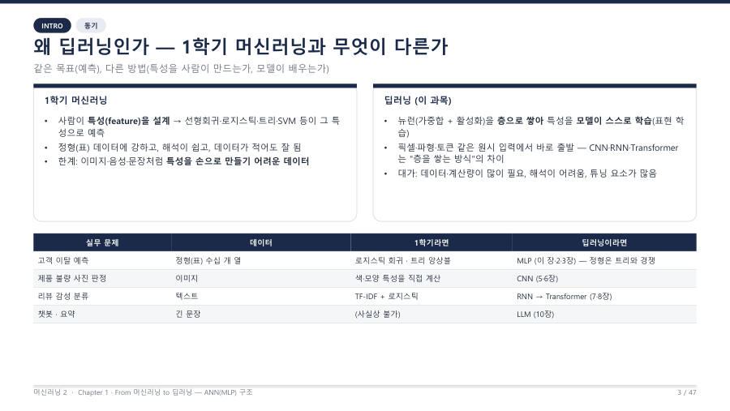
머신러닝이란 — 규칙을 쓰지 않고 데이터에서 배우게 하기머신러닝(machine learning)은 사람이 규칙을 하나하나 써 주지 않고, 컴퓨터가 데이터에서 규칙(패턴)을 스스로 찾…✍ 시험 포인트그림확인 문제숫자 여러 개를 줄 세운 것 — 벡터벡터(vector)는 숫자 여러 개를 한 줄로 세운 것이에요. 예를 들어 x = [2, 3, 1]은 숫자 3개짜리 벡터예요.✍ 시험 포인트확인 문제표 — 행렬행렬(matrix)은 숫자를 가로세로 표 모양으로 늘어놓은 것이에요. 가로줄은 행, 세로줄은 열이라고 불러요.✍ 시험 포인트확인 문제곱하고 더하기 — 가중합신경망 계산의 거의 전부는 "같은 순서끼리 곱한 다음 전부 더하기" 하나예요. 이것을 가중합(weighted sum) 또는 내…✍ 시험 포인트코드확인 문제기울기(경사)를 "산 내려가기"로기울기(미분)는 "지금 서 있는 이 자리가 오르막인지 내리막인지, 얼마나 가파른지"를 알려 주는 숫자예요. 교수님은 "순간 기…✍ 시험 포인트그림확인 문제로그와 지수 — "작을수록 크게 벌주는 함수"−log p는 "p가 1이면 벌점 0, p가 0에 가까워질수록 벌점이 급격히 커지는" 함수예요. 여기서 p는 정답에 준 확률이…✍ 시험 포인트그림확인 문제시험에서 계산은 어디까지? 기호 읽는 법교수님이 7주차 복습 시간에 직접 말한 범위예요. 시그모이드와 로그 값의 수치 손계산은 출제하지 않아요. 대신 정수로 끝나는…✍ 시험 포인트확인 문제이 장 3줄 요약✓ 이 장 문제 풀기읽은 다음 바로 확인뉴런 하나와 편향2주차 · 머신러닝2_chapter1_student_ver.pdf(PART 1) · 머신02.txt · 머신러닝07.txt카드 6장
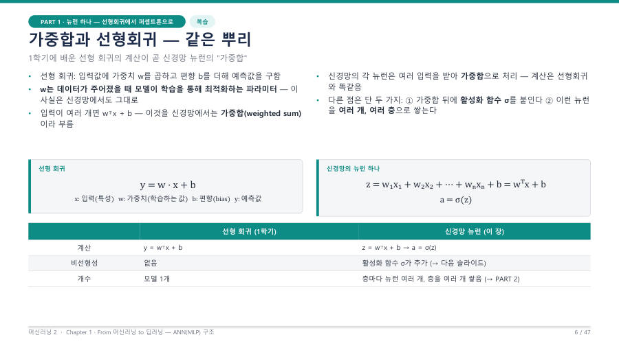
가중합 z = wᵀx + b — 선형회귀와 같은 뿌리가중합(weighted sum)은 입력마다 가중치를 곱해서 모두 더하고 편향을 더한 값이에요. 식은 z = w₁x₁ + w₂x…✍ 시험 포인트그림확인 문제활성화 함수 σ — 신호가 선을 넘어야 전달돼요가중합 뒤에 활성화 함수(activation function) σ를 붙이면 신경망의 뉴런이 돼요. 식으로는 a = σ(z)예요…✍ 시험 포인트코드확인 문제선형회귀·로지스틱 회귀와 무엇이 같고 무엇이 다른가 ★키워드 표에 "선형회귀와 신경망 뉴런의 계산에서 무엇이 같고 무엇이 다른지 말한다"가 있어요. 교수님은 "너무 많이 말하면 답…✍ 시험 포인트확인 문제 편향(bias) — 결정경계를 평행 이동시켜요 ★편향(bias, b)은 직선 y = wx + b의 절편처럼 결정경계를 평행 이동시켜, 입력이 0이어도 출력을 조정할 자유도를…✍ 시험 포인트그림확인 문제코드로 확인 — 뉴런 하나는 세 줄이에요강의자료의 손코딩을 한 줄씩 읽어 볼게요. 입력 x = [2, 3, 1], 가중치 w = [0.5, −0.2, 0.8], 편향…✍ 시험 포인트코드확인 문제이 장 3줄 요약✓ 이 장 문제 풀기읽은 다음 바로 확인
편향(bias) — 결정경계를 평행 이동시켜요 ★편향(bias, b)은 직선 y = wx + b의 절편처럼 결정경계를 평행 이동시켜, 입력이 0이어도 출력을 조정할 자유도를…✍ 시험 포인트그림확인 문제코드로 확인 — 뉴런 하나는 세 줄이에요강의자료의 손코딩을 한 줄씩 읽어 볼게요. 입력 x = [2, 3, 1], 가중치 w = [0.5, −0.2, 0.8], 편향…✍ 시험 포인트코드확인 문제이 장 3줄 요약✓ 이 장 문제 풀기읽은 다음 바로 확인MLP 구조와 파라미터 수2주차·6주차 · 머신러닝2_chapter1_student_ver.pdf(PART 2) · 머신러닝2_chapter3_redesign.pdf(p.11) · 머신02.txt · 머신러닝06.txt · 머신러닝07.txt카드 7장
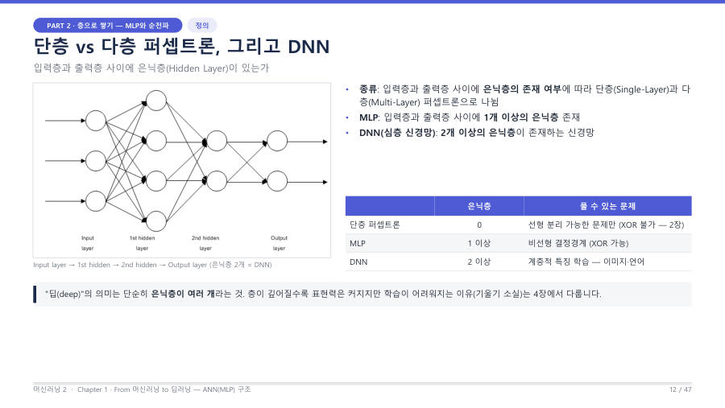
입력층·은닉층·출력층 — 층마다 하는 일은 같아요MLP(Multi-Layer Perceptron, 다층 퍼셉트론)는 입력층과 출력층 사이에 은닉층이 1개 이상 있는 신경망이에…✍ 시험 포인트코드그림확인 문제단층 퍼셉트론 / MLP / DNN 구분구분의 기준은 딱 하나, 은닉층이 몇 개인가예요.✍ 시험 포인트확인 문제 가중치 행렬의 크기 읽기 — W는 (이번 층 × 앞 층)W⁽ˡ⁾의 크기 = (이번 층 뉴런 수 nₗ) × (앞 층 뉴런 수 nₗ₋₁)이고, 편향 b⁽ˡ⁾의 크기는 nₗ(이번 층 뉴런…✍ 시험 포인트그림확인 문제파라미터 수 세기 ★★ — 공식과 예제한 층의 파라미터 수 = (앞 층 뉴런 수 × 이번 층 뉴런 수) + 이번 층 뉴런 수. 앞의 곱은 가중치 W의 개수이고, 뒤…✍ 시험 포인트코드확인 문제
가중치 행렬의 크기 읽기 — W는 (이번 층 × 앞 층)W⁽ˡ⁾의 크기 = (이번 층 뉴런 수 nₗ) × (앞 층 뉴런 수 nₗ₋₁)이고, 편향 b⁽ˡ⁾의 크기는 nₗ(이번 층 뉴런…✍ 시험 포인트그림확인 문제파라미터 수 세기 ★★ — 공식과 예제한 층의 파라미터 수 = (앞 층 뉴런 수 × 이번 층 뉴런 수) + 이번 층 뉴런 수. 앞의 곱은 가중치 W의 개수이고, 뒤…✍ 시험 포인트코드확인 문제 Keras 코드와 model.summary()에서 파라미터 읽기강의 Chapter 3의 MNIST 실습 모델이 바로 784 → 256 → 10이에요. 코드를 한 줄씩 읽어 볼게요.✍ 시험 포인트코드그림확인 문제연습 문제 — 직접 세어 보세요종이에 식을 쓰고 풀어 본 뒤 답을 열어 보세요. 수십 번 보는 것보다 한 번 써 보는 것이 훨씬 오래가요.✍ 시험 포인트확인 문제이 장 3줄 요약✓ 이 장 문제 풀기읽은 다음 바로 확인
Keras 코드와 model.summary()에서 파라미터 읽기강의 Chapter 3의 MNIST 실습 모델이 바로 784 → 256 → 10이에요. 코드를 한 줄씩 읽어 볼게요.✍ 시험 포인트코드그림확인 문제연습 문제 — 직접 세어 보세요종이에 식을 쓰고 풀어 본 뒤 답을 열어 보세요. 수십 번 보는 것보다 한 번 써 보는 것이 훨씬 오래가요.✍ 시험 포인트확인 문제이 장 3줄 요약✓ 이 장 문제 풀기읽은 다음 바로 확인출력층 설계 · Softmax · Cross-Entropy2주차 · 머신러닝2_chapter1_student_ver.pdf(PART 3·5) · 머신02.txt · 머신러닝07.txt카드 7장
 문제 유형이 출력층 세트를 정해요 ★★★출력층에서 정할 것은 세 가지예요. 출력 뉴런 수, 출력층 활성화 함수, 손실 함수이고, 이 셋은 항상 세트로 움직여요. 교수…✍ 시험 포인트그림확인 문제
문제 유형이 출력층 세트를 정해요 ★★★출력층에서 정할 것은 세 가지예요. 출력 뉴런 수, 출력층 활성화 함수, 손실 함수이고, 이 셋은 항상 세트로 움직여요. 교수…✍ 시험 포인트그림확인 문제 Softmax — 점수(로짓)를 확률로 바꿔요Softmax는 출력층의 점수(로짓, logit)를 "모두 0~1이고 합이 1인 확률 분포"로 바꿔 주는 함수예요. 식은 So…✍ 시험 포인트코드그림확인 문제Softmax의 성질 — 옳은 것과 틀린 것 가리기 ★★시험에는 "Softmax의 성질 중 옳은 것/틀린 것을 고르시오"가 나와요. 성질은 다섯 개로 정리돼요.✍ 시험 포인트확인 문제확률을 실무에서 쓰는 법 — 임계값·보류·Top-k·과신Softmax의 확률은 "가장 큰 값이 답"으로 끝나지 않아요. 확신의 크기를 활용해요. 결정 자체는 argmax 한 줄이지만…✍ 시험 포인트확인 문제
Softmax — 점수(로짓)를 확률로 바꿔요Softmax는 출력층의 점수(로짓, logit)를 "모두 0~1이고 합이 1인 확률 분포"로 바꿔 주는 함수예요. 식은 So…✍ 시험 포인트코드그림확인 문제Softmax의 성질 — 옳은 것과 틀린 것 가리기 ★★시험에는 "Softmax의 성질 중 옳은 것/틀린 것을 고르시오"가 나와요. 성질은 다섯 개로 정리돼요.✍ 시험 포인트확인 문제확률을 실무에서 쓰는 법 — 임계값·보류·Top-k·과신Softmax의 확률은 "가장 큰 값이 답"으로 끝나지 않아요. 확신의 크기를 활용해요. 결정 자체는 argmax 한 줄이지만…✍ 시험 포인트확인 문제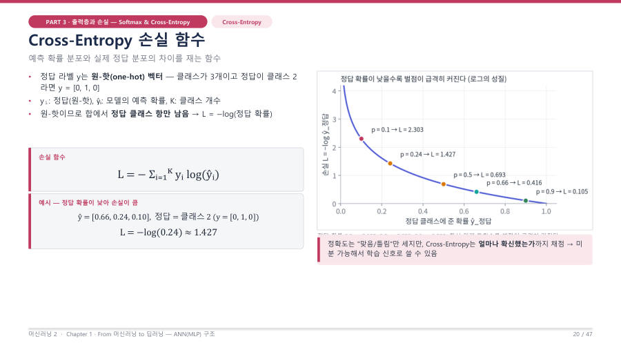
Cross-Entropy — 정답 확률을 채점해요 ★★★Cross-Entropy(CE)는 예측 확률이 정답을 얼마나 잘 맞혔는지를 재는 손실이에요. 식은 L = −Σ yᵢ log(ŷ…✍ 시험 포인트코드그림확인 문제Softmax + CE의 기울기는 "예측 − 정답" ★★손실을 로짓으로 미분한 기울기는 ∂L/∂zᵢ = ŷᵢ − yᵢ (예측 − 정답)이에요.✍ 시험 포인트코드확인 문제이 장 3줄 요약✓ 이 장 문제 풀기읽은 다음 바로 확인경사하강과 학습률2주차·4주차·6주차 · 머신러닝2_chapter1_student_ver.pdf(PART 5) · 머신러닝2_chapter3_redesign.pdf(p.21·27) · 머신02.txt · 머신러닝04.txt · 머신러닝06.txt · 머신러닝07.txt카드 6장
경사하강 — 기울기의 반대로 한 걸음경사하강(gradient descent)은 손실의 기울기를 구해서 그 반대 방향으로 가중치를 조금 옮기는 방법이에요. 식은 w…✍ 시험 포인트코드확인 문제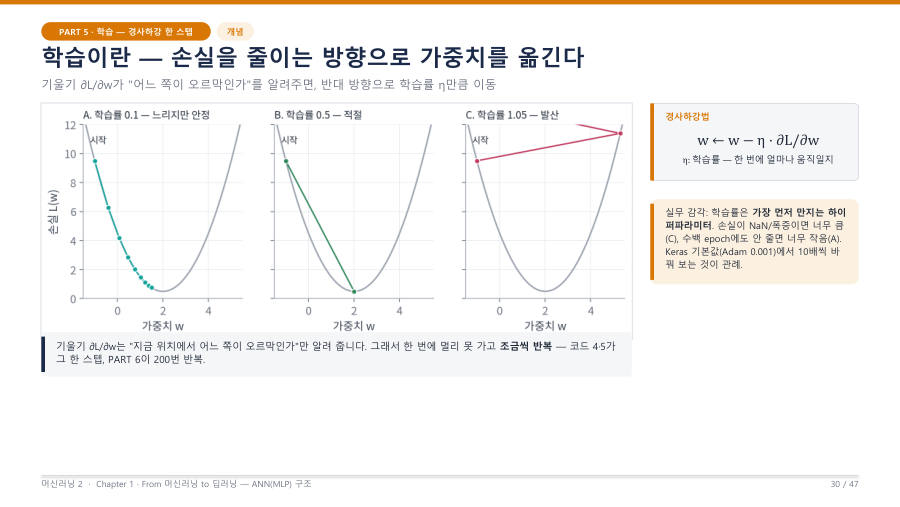
학습률 η — 너무 작으면 느리고, 너무 크면 발산해요 ★★★학습률(learning rate, η)은 한 번 갱신할 때 얼마나 움직일지를 정하는 값이에요. w와 b는 모델이 학습하는 파라…✍ 시험 포인트그림확인 문제 손실 곡선 그림으로 진단하고 처방하기 ★★★"학습률만 다른 손실 곡선 여러 개를 보고 각각을 진단하고 처방(η를 올릴지 내릴지)한다"가 키워드 표의 문장이에요. 교수님도…✍ 시험 포인트그림확인 문제코드로 읽기 — 한 스텝과 200번 반복경사하강의 한 스텝을 코드로 보면 이래요. 3장에서 본 update_weights의 마지막 두 줄이 학습률이 쓰이는 곳이에요.✍ 시험 포인트코드확인 문제실무에서는 optimizer 한 줄 — 그리고 step과 epoch실무에서는 위 루프를 직접 쓰지 않고 model.compile(optimizer='adam') 한 줄로 대신해요. 그래도 알아…✍ 시험 포인트코드확인 문제이 장 3줄 요약✓ 이 장 문제 풀기읽은 다음 바로 확인
손실 곡선 그림으로 진단하고 처방하기 ★★★"학습률만 다른 손실 곡선 여러 개를 보고 각각을 진단하고 처방(η를 올릴지 내릴지)한다"가 키워드 표의 문장이에요. 교수님도…✍ 시험 포인트그림확인 문제코드로 읽기 — 한 스텝과 200번 반복경사하강의 한 스텝을 코드로 보면 이래요. 3장에서 본 update_weights의 마지막 두 줄이 학습률이 쓰이는 곳이에요.✍ 시험 포인트코드확인 문제실무에서는 optimizer 한 줄 — 그리고 step과 epoch실무에서는 위 루프를 직접 쓰지 않고 model.compile(optimizer='adam') 한 줄로 대신해요. 그래도 알아…✍ 시험 포인트코드확인 문제이 장 3줄 요약✓ 이 장 문제 풀기읽은 다음 바로 확인혼동행렬과 평가지표4주차 · 머신러닝2_chapter2_student_ver.pdf(PART 3, p.18–21) · 머신러닝04.txt, 머신러닝07.txt(10/19 중간고사 복습)카드 8장
혼동행렬 — 맞음과 틀림을 네 칸에 담은 표 ★행 = 실제 정답, 열 = 모델의 예측. 대각선(TP, TN)은 맞힌 것, 대각선 밖(FN, FP)은 틀린 것이에요.✍ 시험 포인트그림확인 문제 네 가지 지표 — 분모가 전부예요 ★혼동행렬의 숫자 네 개로 지표를 만들어요. 외울 것은 식이 아니라 분모에 무엇이 들어가는가예요. 교수님도 "단순 암기하지 말고…✍ 시험 포인트그림확인 문제계산 연습 — 정수로 끝나는 문제 ★시험에서는 계산기를 못 써요. 하지만 시그모이드나 로그 같은 어려운 계산은 나오지 않고, "몇 나누기 몇", "몇 곱하기 몇"…✍ 시험 포인트확인 문제
네 가지 지표 — 분모가 전부예요 ★혼동행렬의 숫자 네 개로 지표를 만들어요. 외울 것은 식이 아니라 분모에 무엇이 들어가는가예요. 교수님도 "단순 암기하지 말고…✍ 시험 포인트그림확인 문제계산 연습 — 정수로 끝나는 문제 ★시험에서는 계산기를 못 써요. 하지만 시그모이드나 로그 같은 어려운 계산은 나오지 않고, "몇 나누기 몇", "몇 곱하기 몇"…✍ 시험 포인트확인 문제 정확도의 함정 — 불균형 데이터와 "모두 음성" 모델 ★병에 걸린 사람이 전체의 10%뿐인 상황(유병률 10%)을 생각해 봐요. 그런데 어떤 바보 모델이 환자를 한 번도 찾지 않고…✍ 시험 포인트그림확인 문제
정확도의 함정 — 불균형 데이터와 "모두 음성" 모델 ★병에 걸린 사람이 전체의 10%뿐인 상황(유병률 10%)을 생각해 봐요. 그런데 어떤 바보 모델이 환자를 한 번도 찾지 않고…✍ 시험 포인트그림확인 문제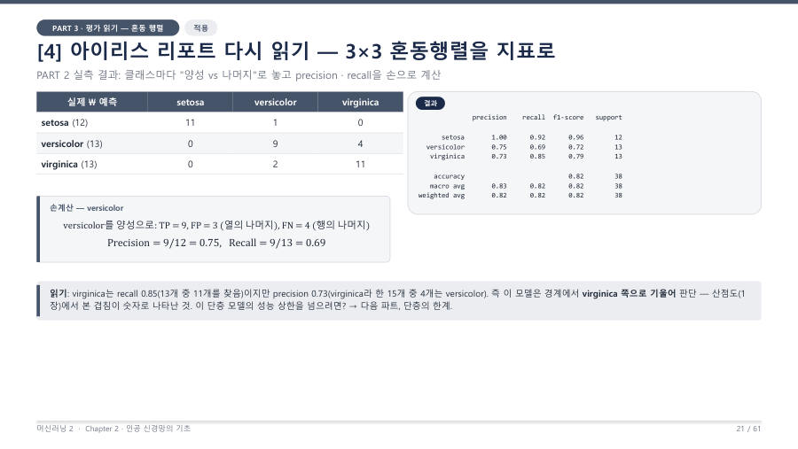
3×3 혼동행렬 — 클래스 하나씩 "양성 대 나머지" ★클래스가 셋 이상이면 표도 3×3으로 커져요. 방법은 간단해요. 지표를 알고 싶은 클래스 하나를 양성으로, 나머지를 전부 합쳐…✍ 시험 포인트그림확인 문제어떤 오류가 더 비싼가 — 지표와 임계값 고르기 ★FN과 FP는 틀린 정도가 같아도 값(비용)이 달라요. 어느 쪽이 더 아픈지에 따라 우선해서 볼 지표가 달라져요. 교수님은 이…✍ 시험 포인트확인 문제연습 문제 — 객관식으로 풀어 봐요문제 1. 혼동행렬에서 FN의 설명으로 옳은 것은?확인 문제이 장 3줄 요약✓ 이 장 문제 풀기읽은 다음 바로 확인활성화 함수3주차 · 머신러닝2_chapter2_student_ver.pdf(PART 5, p.29–33, p.48) · 머신러닝03.txt, 머신러닝07.txt(10/19 중간고사 복습)카드 7장
왜 필요한가 — 선형 ∘ 선형 = 선형 ★선형 ∘ 선형 = 선형. 활성화 함수가 없는 Dense를 여러 층 쌓아도 결국 "선형 분류기 하나"와 같아요.✍ 시험 포인트그림확인 문제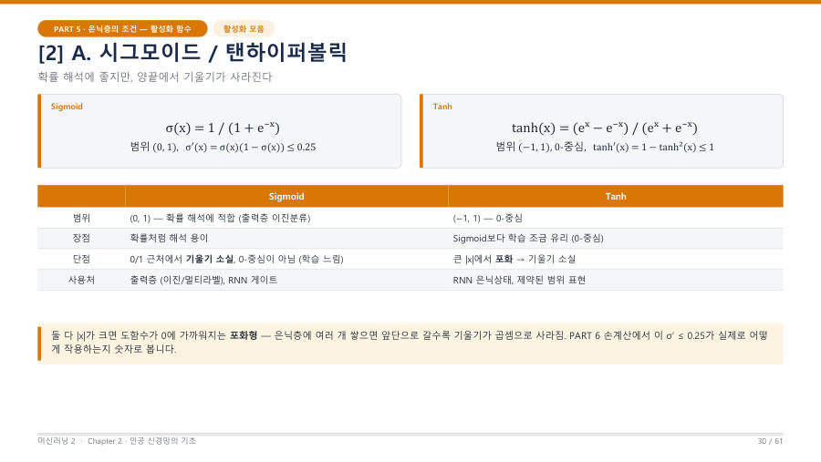
세 함수를 그래프로 구분하기 ★★시험에는 이름 없는 그래프를 보여 주고 "이것은 무슨 함수인가", "범위는 얼마인가"를 묻는 문제가 나와요. 세 함수의 모양을…✍ 시험 포인트그림확인 문제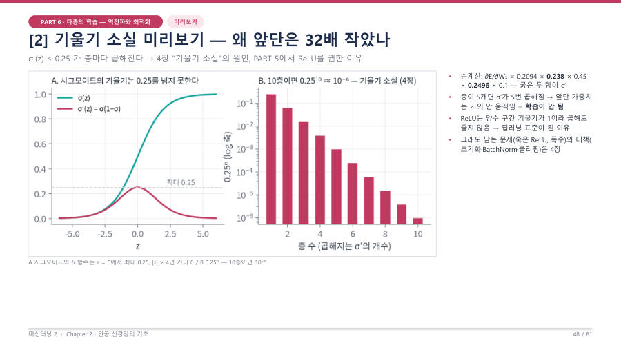
포화와 기울기 소실 ★기울기 소실(vanishing gradient) = 역전파로 거꾸로 전달되는 기울기가 층을 지날수록 0에 가까워져서 앞쪽 층이…✍ 시험 포인트그림확인 문제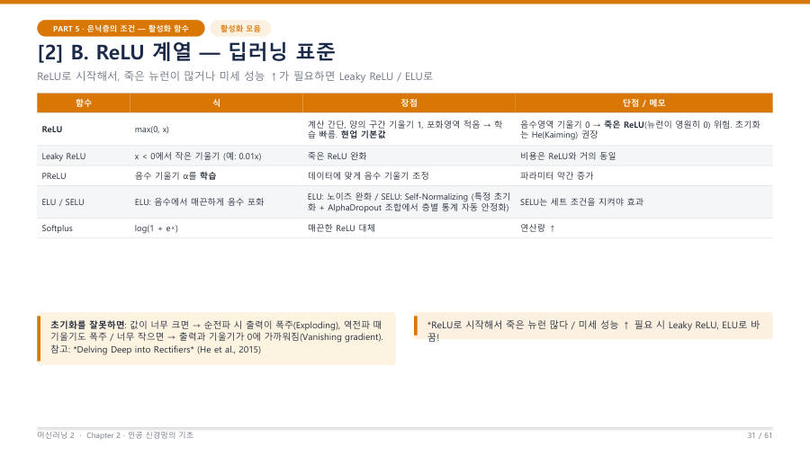
ReLU와 죽은 뉴런 ★ReLU는 max(0, x)예요. 입력이 음수이면 0, 양수이면 그대로 내보내요. 식의 뒤쪽 0이 중요해요. "음수는 0으로…✍ 시험 포인트그림확인 문제출력층 활성화는 손실과 세트 ★★은닉층 활성화(ReLU 등)와 출력층 활성화는 역할이 달라요. 은닉층은 모양을 구부려 표현력을 만드는 일을 하고, 출력층은 "…✍ 시험 포인트확인 문제연습 문제 — 그래프와 개념으로 풀어 봐요문제 1. 아래 이름 없는 세 그래프의 이름을 순서대로 쓰세요.그림확인 문제이 장 3줄 요약✓ 이 장 문제 풀기읽은 다음 바로 확인역전파(개념) · 과적합 · 정규화3~4주차 · 머신러닝2_chapter2_student_ver.pdf(PART 6 p.35–36, PART 7 p.55–57) · 머신러닝03.txt, 머신러닝04.txt, 머신러닝07.txt(10/19 중간고사 복습)카드 8장
순전파와 역전파 — 한 문장 정의와 Chain Rule ★역전파 = 손실을 각 파라미터로 미분한 기울기를, Chain Rule을 이용해 출력층에서 입력층 방향으로 곱해 가며 전달·계산…✍ 시험 포인트확인 문제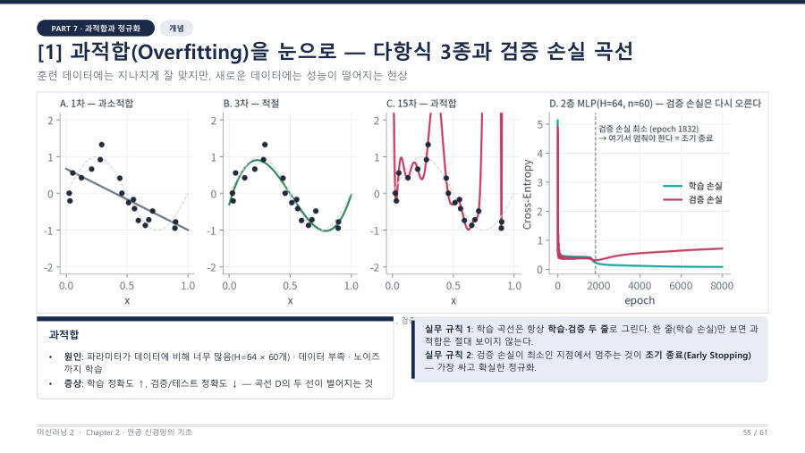
과적합이란 — 외우기만 하고 새 문제를 못 푸는 상태 ★★학습이 잘 되기 시작하면 다음 문제는 "너무 잘 되는 것"이에요. 과적합(overfitting)은 훈련 데이터에는 지나치게 잘…✍ 시험 포인트그림확인 문제 학습·검증 곡선 네 패턴 — 진단과 처방 ★★★교수님은 "실무에서 곡선을 보고 내리는 결정의 90%는 이 네 패턴 중 하나"라고 했어요. 그래프를 보고 현상 이름 → 그래프…✍ 시험 포인트그림확인 문제
학습·검증 곡선 네 패턴 — 진단과 처방 ★★★교수님은 "실무에서 곡선을 보고 내리는 결정의 90%는 이 네 패턴 중 하나"라고 했어요. 그래프를 보고 현상 이름 → 그래프…✍ 시험 포인트그림확인 문제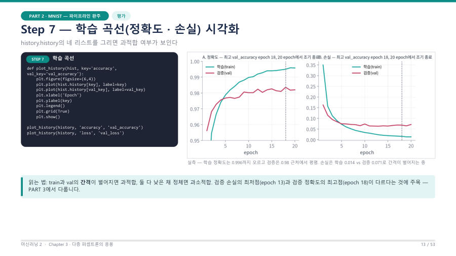
조기 종료 — 검증 손실이 바닥일 때 멈춰요 ★epoch을 늘린다고 계속 좋아지지 않아요. 검증 손실에는 최소 지점이 있고, 그 뒤로는 암기만 늘어요. 그 지점에서 학습을…✍ 시험 포인트그림확인 문제L1 대 L2 — 손실에 벌점을 붙여요 ★머신러닝1에서 배운 정규화예요. 손실에 가중치의 크기에 대한 벌점을 더해서 모델이 지나치게 구부러지지 못하게 해요. 새 손실…✍ 시험 포인트확인 문제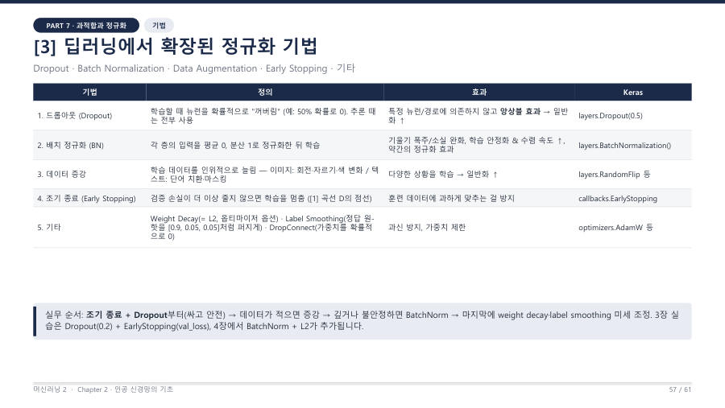
딥러닝의 정규화 기법 — 무엇을 바꾸는가 ★★머신러닝1의 L1·L2가 딥러닝에서는 여러 기법으로 넓어졌어요. 교수님은 "시험에 여러 문제가 나온다, 매우매우 중요하다"고…✍ 시험 포인트그림확인 문제모의 문제 — 곡선 읽고 쓰기주관식 모의 1. 아래는 10 epoch 동안의 손실 기록이에요. 현상 이름, 근거, 멈춰야 할 epoch, EarlyStop…확인 문제이 장 3줄 요약✓ 이 장 문제 풀기읽은 다음 바로 확인Keras로 MLP 만들기6주차 · 머신러닝2_chapter3_redesign.pdf(p.1–17) · 머신러닝06.txt, 머신러닝07.txt(10/19 중간고사 복습)카드 7장
 NumPy에서 Keras로 — 부품 대응표 ★앞에서 NumPy로 손수 짠 신경망(가중치 초기화, 순전파, 손실, 역전파, 경사하강, 학습 루프)은 Keras에서 객체와 인…✍ 시험 포인트그림확인 문제층 부품 알아보기 — Sequential · Input · Flatten · Dense · Dropout ★★Sequential은 층을 "리스트에 적은 순서대로" 쌓는 모델이에요. 맨 위가 입력 쪽, 맨 아래가 출력 쪽이에요. MNIS…✍ 시험 포인트그림확인 문제MNIST 코드 한 줄씩 읽기 ★★★교수님이 "Ctrl+Enter만 누르지 말고 코드 안을 읽으라"고 한 부분이에요. 데이터 불러오기는 중요도가 낮고, 모델을 만…✍ 시험 포인트코드확인 문제손실 문자열 고르기 — 라벨 형식이 정해요 ★★★정수 라벨 → sparse_categorical_crossentropy / 원-핫 라벨 → categorical_crossen…✍ 시험 포인트확인 문제
NumPy에서 Keras로 — 부품 대응표 ★앞에서 NumPy로 손수 짠 신경망(가중치 초기화, 순전파, 손실, 역전파, 경사하강, 학습 루프)은 Keras에서 객체와 인…✍ 시험 포인트그림확인 문제층 부품 알아보기 — Sequential · Input · Flatten · Dense · Dropout ★★Sequential은 층을 "리스트에 적은 순서대로" 쌓는 모델이에요. 맨 위가 입력 쪽, 맨 아래가 출력 쪽이에요. MNIS…✍ 시험 포인트그림확인 문제MNIST 코드 한 줄씩 읽기 ★★★교수님이 "Ctrl+Enter만 누르지 말고 코드 안을 읽으라"고 한 부분이에요. 데이터 불러오기는 중요도가 낮고, 모델을 만…✍ 시험 포인트코드확인 문제손실 문자열 고르기 — 라벨 형식이 정해요 ★★★정수 라벨 → sparse_categorical_crossentropy / 원-핫 라벨 → categorical_crossen…✍ 시험 포인트확인 문제 model.summary()와 파라미터 수 세기 ★★★Dense(입력 → 출력)의 파라미터 = 입력 × 출력 + 출력. 앞의 곱이 가중치, 뒤의 "+ 출력"이 편향(뉴런마다 하나)…✍ 시험 포인트그림확인 문제코드 빈칸 연습 — 정답 철자를 손에 익혀요 ★★★단답형은 이런 식으로 나와요. 정답은 대소문자, 따옴표, 언더바까지 똑같아야 해요. 먼저 철자 주의표를 눈에 익히고, 가린 답…✍ 시험 포인트코드확인 문제이 장 3줄 요약✓ 이 장 문제 풀기읽은 다음 바로 확인
model.summary()와 파라미터 수 세기 ★★★Dense(입력 → 출력)의 파라미터 = 입력 × 출력 + 출력. 앞의 곱이 가중치, 뒤의 "+ 출력"이 편향(뉴런마다 하나)…✍ 시험 포인트그림확인 문제코드 빈칸 연습 — 정답 철자를 손에 익혀요 ★★★단답형은 이런 식으로 나와요. 정답은 대소문자, 따옴표, 언더바까지 똑같아야 해요. 먼저 철자 주의표를 눈에 익히고, 가린 답…✍ 시험 포인트코드확인 문제이 장 3줄 요약✓ 이 장 문제 풀기읽은 다음 바로 확인batch · epoch · step과 EarlyStopping6주차 · 머신러닝2_chapter3_redesign.pdf(p.18–28) · 머신러닝06.txt, 머신러닝07.txt(10/19 중간고사 복습)카드 9장
 batch · step · epoch — 한 바퀴를 세는 세 단위 ★★★1 epoch의 step 수 = ⌈ 학습 샘플 수 ÷ batch_size ⌉ (소수가 나오면 올림)✍ 시험 포인트그림확인 문제
batch · step · epoch — 한 바퀴를 세는 세 단위 ★★★1 epoch의 step 수 = ⌈ 학습 샘플 수 ÷ batch_size ⌉ (소수가 나오면 올림)✍ 시험 포인트그림확인 문제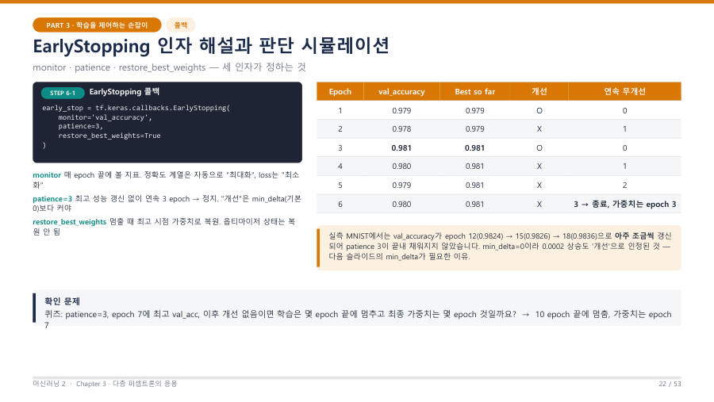
EarlyStopping 인자와 동작 시뮬레이션 ★★★EarlyStopping = monitor한 지표가 연속 patience epoch 동안 최고 기록을 못 넘으면 학습을 멈추고…✍ 시험 포인트코드그림확인 문제fit에 연결하기 — 인자와 로그 읽기 ★★콜백만 만들어서는 아무 일도 안 일어나요. fit의 callbacks=[…]에 리스트로 묶어 넘겨야 연결돼요. 콜백이 여러 개…✍ 시험 포인트코드확인 문제 Dropout 동작 — 학습 때만 끄고 추론 때는 모두 켜요 ★★Dropout은 7장에서 정규화 기법으로 만났어요. 이번에는 "어느 때 켜지고 꺼지는가"를 봐요. 시험에는 로그에서 보이는 이…✍ 시험 포인트그림확인 문제
Dropout 동작 — 학습 때만 끄고 추론 때는 모두 켜요 ★★Dropout은 7장에서 정규화 기법으로 만났어요. 이번에는 "어느 때 켜지고 꺼지는가"를 봐요. 시험에는 로그에서 보이는 이…✍ 시험 포인트그림확인 문제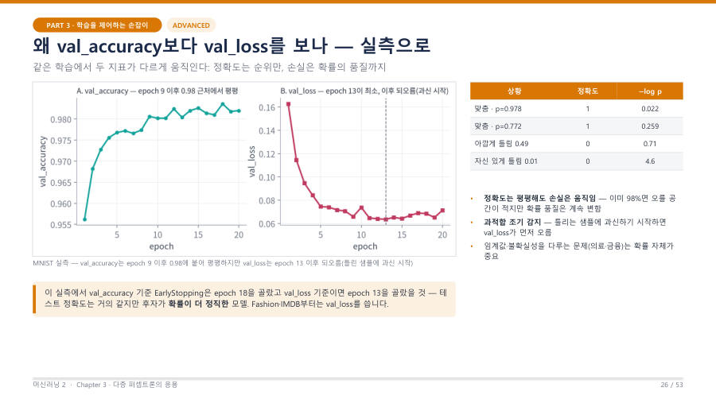
val_loss 대 val_accuracy — 무엇을 monitor할까 ★★EarlyStopping의 monitor로 val_accuracy를 쓸까 val_loss를 쓸까요? 둘은 보는 것이 달라요.✍ 시험 포인트그림확인 문제옵티마이저와 학습률 — 가장 중요한 손잡이 ★compile의 optimizer가 정하는 것은 "기울기를 보고 가중치를 어떻게 움직일까"예요. 가장 단순한 SGD에서 출발해…✍ 시험 포인트확인 문제그 밖의 손잡이 — 콜백 세 가지와 하이퍼파라미터 실험 (참고)EarlyStopping과 함께 쓰는 콜백이 두 개 더 있어요. 이름과 역할만 알아 두면 돼요.확인 문제종합 모의 문제문제 1. 학습 샘플 20,000개, batch_size 64로 학습할 때 1 epoch의 step 수는?확인 문제이 장 3줄 요약✓ 이 장 문제 풀기읽은 다음 바로 확인연습하기읽고 나서 여기서 확인
B+ 핵심 문제꼭 나올 문제만 30개
퀴즈 135장별로 풀기 · 틀린 것만 다시
서술형 · 설명 14쉬운 풀이 + 시험지에 쓸 답
암기카드용어 39 · 공식·숫자 18
낱말사전 138모르는 말 찾기
시험 전 1장시험 정보 · 공식 · 용어 한 장에